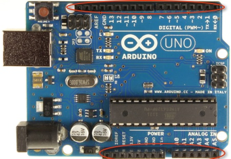
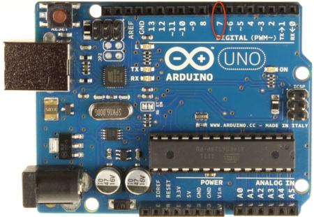
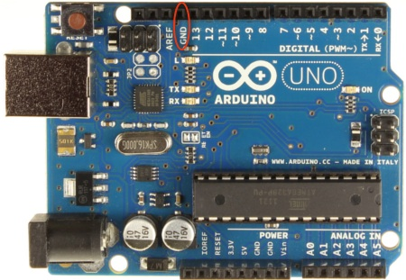
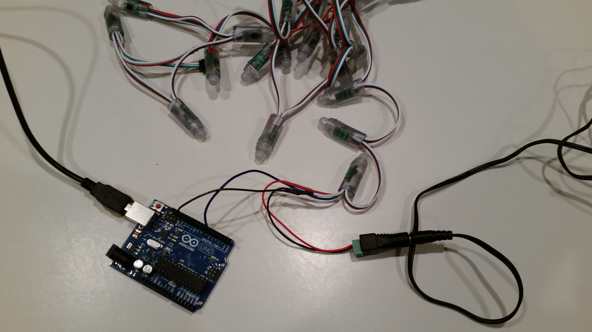

Now that you have learned to connect your Arduino board and you have an example program running, let's begin working with the lights.
We're going to begin with the hardware, which is any physical component of the system. (Can you touch it? It is hardware!) In this project, your main pieces of hardware are the lights, Arduino board, and computer, but there are smaller pieces, too, such as the USB cable and wires.
First, let's take a look at your lights. Your strand of lights consists of 25 LED lights. These lights are individually addressable, which means that you can control the color and brightness of each light individually. The color and brightness are set by program commands, and a sequence of program commands can make the lights display a pattern, a message, or whatever the programmer chooses.
Looking at the lights again, you'll notice that there are three colors of wire running between the lights. Each of these wires is serving a purpose: the data wire (green or blue) carries data (or the programmer's instructions) to the lights, the red wire carries power, and the white wire carries ground.
We've modified the lights for the projects, and the data wire has been extended using a blue wire, the power wire has been extended with red wire, and the ground wire has been extended with black wire. The red wire and one of the black are already connected to a power cable connector plug—that is how your lights will be connected to the power adaptor.
Next, let's take another look at the Arduino board. As you look at
it, notice the numbered black components:

Each of the holes is a pin. Pins are where we will connect the Arduino
board to external components. Find the pin labeled 7, put the blue
wire in this pin (the other end is already connected to the data wire). We will
be using pin 7 to send our instructions from the board to the lights.

Connect the free end of a black ground wire to the pin labeled GND
(for ground, and indicated below). The other end of this piece of black wire
should be connected to the lights--the other black ground wire should already be
connected to the lights and the power connector.

Now plug in the lights. To do this, plug the lights into the power adaptor in your box, and then plug the power adaptor into one of the plugs behind the monitor on your desk. If you have trouble accessing the plug, try using the power strip in your box and then plugging the power adaptor into it.
When the lights and Arduino board are fully connected, they should look
like this:

Next, we'll learn to control the lights.